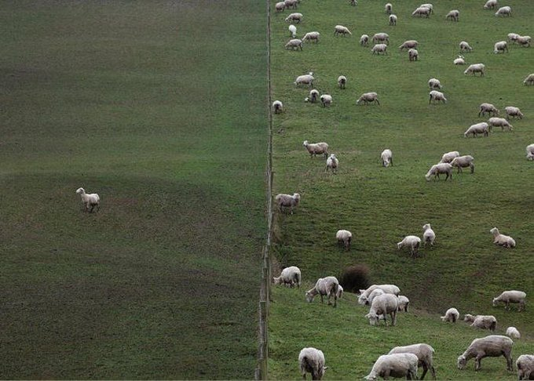
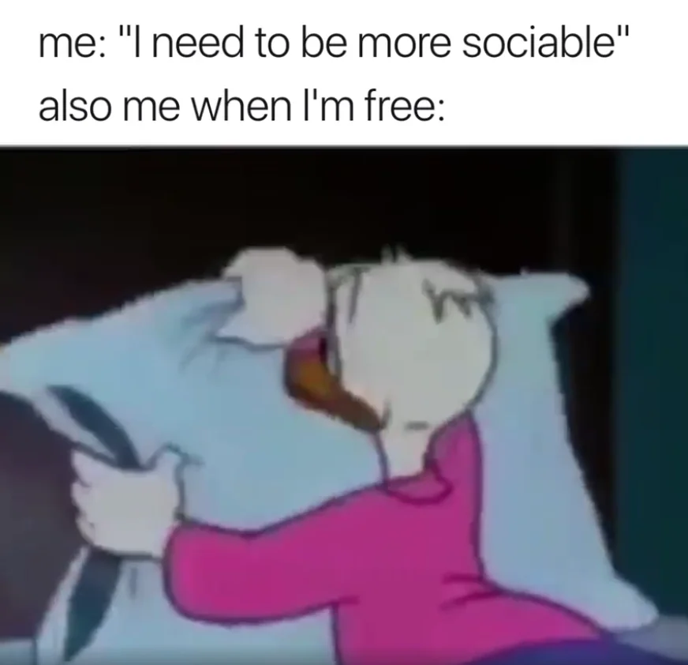
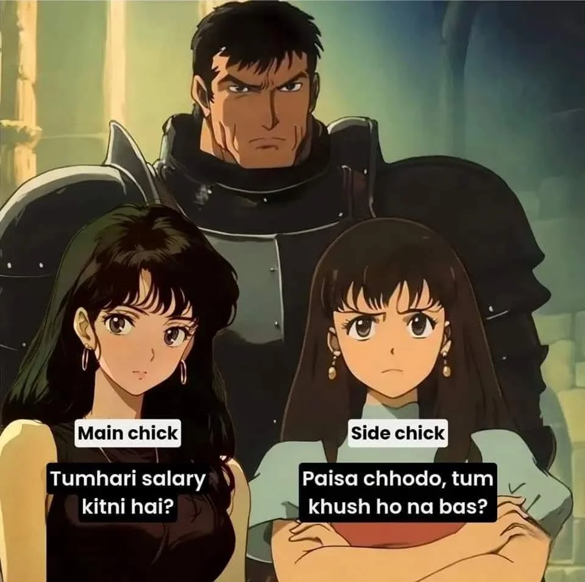
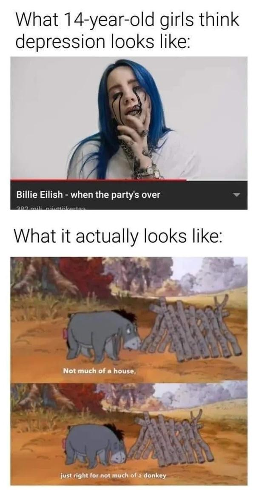
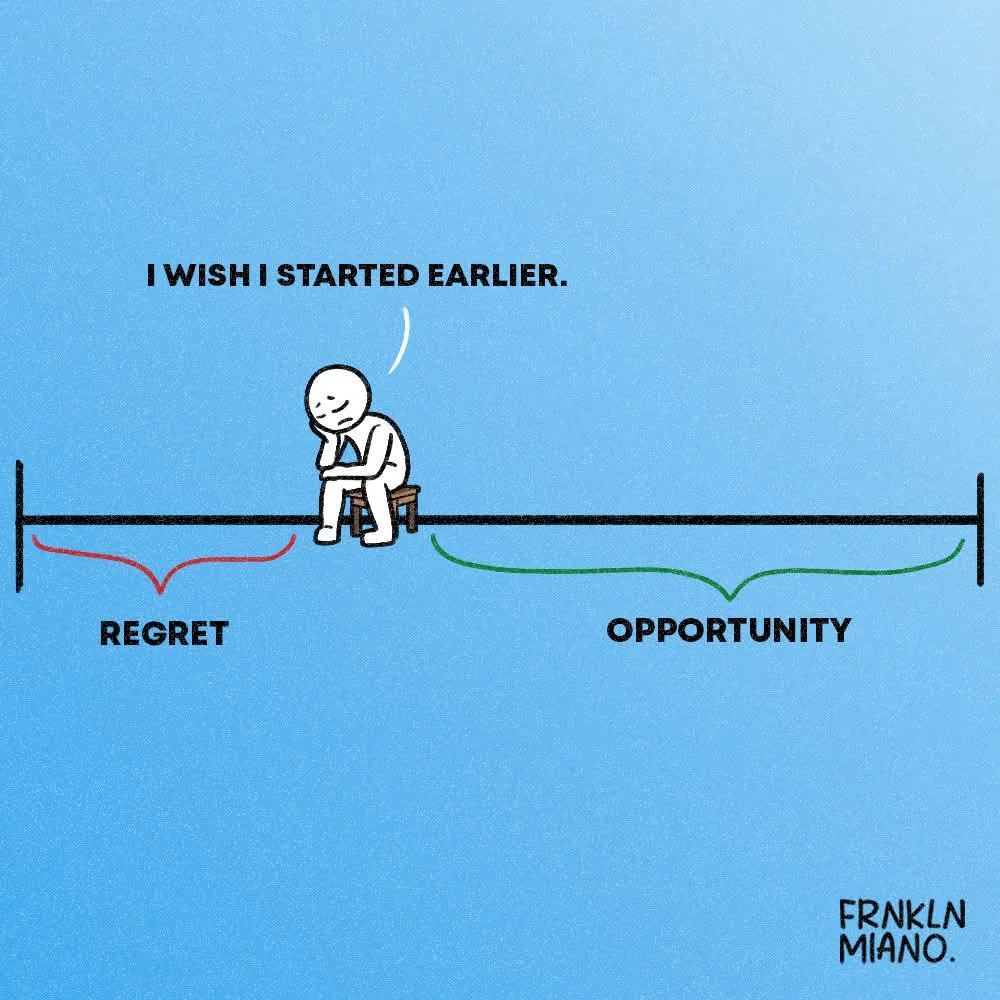
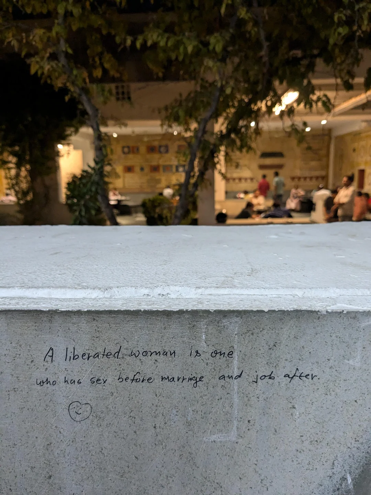

Maan Ki Baat
dil/dimag se blog tak
meri maan ki baat, aapke liye
Edit: 2025-02-16
kidhar ja raha hu mai?
Edit: 2025-02-28
At that phase of my life again

when everything feels numb,
When trust turns fragile,
when my perspective changes.
crying is such a talent, that i've lost
wish i could cry out loud, like the old days
saw 26 with him again today,
that too in class, front of everyone,
so now things are getting are getting elevated, such much that it's public now.
it's so over for me, ngl
I need weed, fr
looking for supplier
tourist in a dream, a visitor it seems


aul bhai these days with his 2 chicks. R on left & S on right.
oh shit, bhaiya ka call aagaya.
Edit: 2025-03-01
ngl, sometimes K.S. feels like he is just using us as a catapult.
I fear betrayal coming from his side soon.
The way he licks vedansh's ass, and then says seniors are bad. Something's for sure fissy. I can't read his mind, but his actions are sus, very sus.
Context: Vedansh, as a elected mentor & senior of AIADS batch, is organising a fresher party. &(apparently) is forcing us to pay the fees & attend it. Between all this, we had technovision25 at SATI, and he allegedly was supporting day scholar get qualified & making (us)hostler get eliminated. Including me, we too had a great fight with flux team. didn't knew vedansh was behind this. All of us hostler are now against vendash cum bucket, but koustubh is still licking. while most of our batch are making excuses to not attend freshers party, koustubh is going. Knowing how badly vedansh abused his floormates, one of them got seisures and was in hospital for few days.
Edit: 2025-03-02
so true, SO TRUE.
cannot emmphasize it enought, experiencing this rn, can't get more real than this.
each day i feel i'm getting dumber.
If you think, that calling me CEO of a company makes me happy, you are very wrong. Have some shame buddy, fr once.
Edit: 2025-03-04
kal fresher's hai,
thik hai, staying out of loop.
either i'm very mature, or very immature
either ways, maa chu`

Edit: 2025-03-06
ngl, i legit now have trust issues.
yeh fresher hone ke baad, alag ka hi fomo ho raha hai
aul aur zays gives me so much ptsd. Being extrovert is such a niche skill. ladki mil jati hai
ladki ka chakar, shit shit shit. fuck me.
currently at a point when helping other seems useless to me. what i'm going to get in return? acche se baat kar sakte ho atleast.
in dire need of new friends.
Edit: 2025-03-07

Edit: 2025-03-11
Rashi mam aur girrlies ka beef hogaya.
iss context me, i'll support rashi, girls ko btech in cse ki jagah btech in machine designing karwo. dishwasher these days are very inefficient. /s
Seniors of SATI cannot be trust, who bhi underages ke sath. Respect+ for rashi. L girls, jo seniors pe life stake kar rahi. lmfao.
Edit: 2025-03-13
kal(imean aaj) indore jana hai. 15+ log, single train, beef hojayega, peak cinema hojayega train me.
Edit: 2025-03-21
ghar.
i need to vent asap
fact bhai, loyal hu mai. sabke sath loyal hu.
i got nothing to loss, itna toh iq hai ki factory worker hi ban jau, lekin itna low standard nahi mera. past matters, fir log bolte hai arrange marriage is bad.
toxicity hi itni jyada hai, credits to insta & jio. bhusi ke liye kuch bhi karunga, doesn't matter, bina sense ki ladai bhi karunga.
Edit: 2025-03-23
Should be studying rn, but i'm better off writing this.
this, i see india becoming north korea soon under bjp's rule. shit's so insecure, want access of every piece of data.
Thinking more about this, how we forgot R.G. Kar case in weeks, tell a lot about what mindset of people i/we are living with. Teasing females is so normalized, that even girls straight up asks for it(credits to... instagram). Some neighbor told be not go vidisha for uni, we were like fucj'em, we ball. people so shit here, walking in torn cloths here feels like i'm some rich frag. apart from that, how dangerous it is for females. no way i'm sending my sister in this college. All of seniors are like crazy dipped towards getting pussy, damn, how sexually deprived you have to be for this level of nichness.
shashi tharoor rightly said: in india it's ok to piss in public but not kiss in public.
Edit: 2025-03-24
bahoot kuch kehna chahta hu, lekin padhna bhi hai.
jaise aul bhul gaya hai usse uski (temporary)bandi kaise mili. hackathon me kon le gaya tha, aur volenteer kon banwaya.
say itna abusive hai, fir bhi poker face karke rizz kar leta hai. only issue is, i'm too nice/helpfull to people who in turn always ends up ditching me.
Edit: 2025-03-29
Sneha dubey is not the first sneha zay has heard about.
Edit: 2025-03-31
living in the city
Edit: 2025-04-03
wapis hostel aagaya, made no progress. Mummy ne A-grade khana khilaya. ghar is ghar for a reason.

when the moon comes up
Edit: 2025-04-06
had a program today, 24 of my batchmates went together to school in a bus and i(a true asshole) read chats of you know who. chetan choudhary is whom i'm looking for. apart from reading chat, this program was a great experience. isse miss karta toh fomo hota, lekin attend kar diya.
bus me solid vibes set hogaya tha. it was nice ki zay aur aul nahi the. full fun hua, uj bhai sezy ke sath. this also proves im in a wrong friend circle.
felt great teaching children, but again, i felt like my brain's clock speed throttles when i'm out of my safe space.
Edit: 2025-04-09
ye kya horaha hai god ji.
mere sath kyu nahi hota yeh sab god ji.
TiT me hackathon, fuck utkarsh arjariya and his team
Edit: 2025-04-15
once in a while i cry, today i cried
.
in a desperate need of female friend and cuddles sex!
Blog Creation: 2024-12-27
Last edited on: 2025-04-09